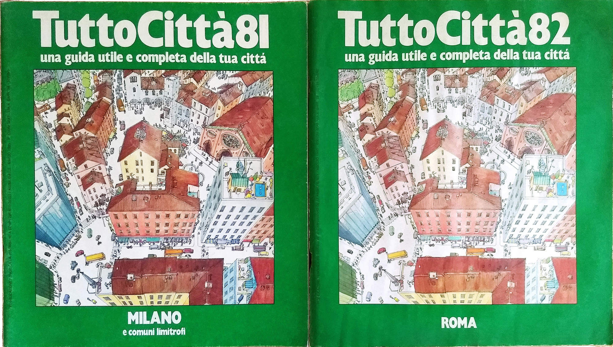
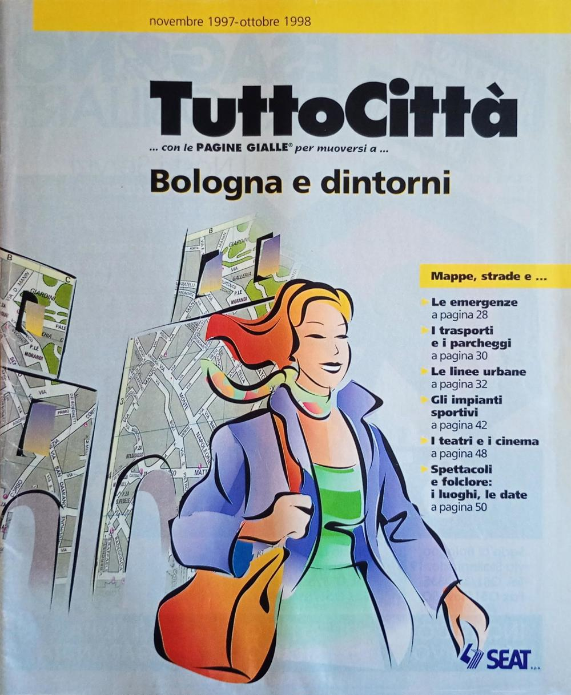

TuttoCittà — ricostruzione della storia editoriale (1981-2014)
Censimento delle edizioni locali del fascicolo cartografico TuttoCittà, supplemento delle Pagine Gialle pubblicato da SEAT dal 1981 al 2014, con 1995 fascicoli accertati su 34 annate e 20 regioni.
I dati derivano da una collezione privata di oltre 1.200 esemplari, da dati incrociati con altri raccoglitori e dalle regolarità editoriali osservate nelle pubblicazioni.
Come leggere le annate
L'indicizzazione è per anno di copertina, non per anno civile. Il ciclo editoriale solitamente si
apriva a febbraio e si chiudeva a gennaio dell'anno successivo; i fascicoli editi nella seconda metà
dell'anno di riferimento quindi riportavano in copertina già l'anno successivo, in quanto andavano in
distribuzione alla fine dell'anno o all'inizio dell'anno dopo. Ad esempio l'annata 81/82 comprendeva
fascicoli che riportavano in copertina sia 81 sia 82:
- le serie iniziali sono quelle il cui fascicolo dell'annata 1981/82 riporta come titolo TuttoCittà 81;
- le serie tardive sono quelle il cui fascicolo della stessa annata riporta TuttoCittà 82.

I fascicoli di Bologna e delle province della Campania e della Basilicata saltano nominalmente il TuttoCittà 85, passando da serie iniziale a serie tardiva, in coincidenza con la riforma grafica della topografia delle dieci città maggiori.
Il Piemonte chiudeva di norma l'annata, con aggiornamenti attorno al gennaio successivo: i suoi fascicoli dell'annata 1999/2000 portano in copertina il 2000.
Un'anomalia: i fascicoli senza anno in copertina
Nelle annate 1997/98 e 1998/99 una parte dei fascicoli — quelli con copertina grigia — non riporta alcun anno sul frontespizio: al suo posto compare la sola finestra d'uso, in due forme successive, prima con inizio e scadenza («nov 1997 - ott 1998») e poi con la sola scadenza («da utilizzare fino a…»). Il passaggio fra le due avviene all'inizio dell'annata 98/99: i due fascicoli d'apertura, Milano e Lodi-Provincia di Milano, portano ancora l'intervallo completo. La finestra è sempre di dodici mesi, e il fascicolo restava valido fino all'arrivo del successivo.

I fascicoli senza anno in copertina accertati sono 77, di cui 35 nell'annata 97/98 e 42 nell'annata 98/99. Per essi l'anno indicato nelle tabelle non è la trascrizione di un dato stampato né una derivazione dalla finestra d'uso, ma è un'attribuzione convenzionale secondo la posizione del fascicolo nel ciclo, la stessa convenzione applicata ai fascicoli che l'anno lo riportano. Nell'annata 97/98 la copertina grigia compare solo nella coda del ciclo, quindi i suoi fascicoli sono tutti di serie tardiva, ma non tutti i fascicoli di serie tardiva portano questo layout, perché i fascicoli campani e lucani portano copertina beige con il 1998 stampato. L'annata successiva, ossia la 98/99, si chiude con Torino, che introduce la copertina gialla poi adottata negli anni successivi.
Stati di ciascuna cella
| stato | significato |
|---|---|
pubblicato |
fascicolo accertato. L'anno di copertina può mancare quando il dato non è noto |
probabile_non_confermato |
pubblicazione ritenuta probabile ma non confermata |
non_pubblicato |
fascicolo non pubblicato, per raggruppamento diverso delle province o, dall'annata 98/99, per incorporazione nelle Pagine Gialle |
Lo stato non_pubblicato riflette la ricostruzione del compilatore basata sulle regolarità
editoriali: non è sempre un'attestazione documentaria positiva di assenza. È una posizione
falsificabile — il ritrovamento di un esemplare comporta l'aggiornamento del dato.
Dati
dati/fascicoli_lungo.csv— una riga per fascicolo e annata: la forma adatta al riusodati/fascicoli_matrice.csv— la matrice come nel foglio originaledati/copertine_per_annata.csv— tipi di copertina, conteggi, colore delle tavoledati/totali_per_annata.csv— totali per annata e note editoriali- Questioni aperte · Cerca nei dati · Controlli di integrità
Licenza e citazione
Dati e testi: CC BY 4.0. Attribuzione: Roberto Mura.
Citazione consigliata: Mura, Roberto (2026). TuttoCittà: ricostruzione della storia editoriale (1981-2014), versione 1.4. Zenodo. DOI: 10.5281/zenodo.21820762